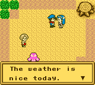
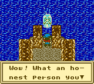
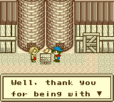
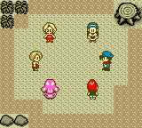
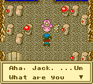

EVENTOS
Cavalo de Graça
No décimo dia da Primavera um cavalo bebê aparecerá na porta da sua fazenda. Ele está perdido e precisa de cuidados. Depois de você dar um nome ao cavalo ele viverá na sua fazenda.
Depois de uma estação (10° de Verão) seu cavalo se tornará adulto. Agora você pode comprar a Sela/Saddlebags de Ann e usa-la para ele entregar seus produtos a caixa de entrega.
Regador Aprimorado
Quando você acorda de manhã depois de usar sua enxada 200 vezes para arar o solo, Ann estará esperando por você. Ela diz que pode melhorar seu regador para um Borrifador, mas isso levará 7 dias para terminar.
Com sorte Ann não leva seu regador para fazer o aprimoramento, então você ainda pode regar suas plantações com o velho regador enquanto ela trabalha. Depois de 7 dias vá para loja dela e lá estará para venda por 2000G.
Quando você compra o Borrifador você perderá seu regador.
Foice Aprimorada
Quando você conversa com um dos Duendes da Colheita depois de ter colhido sua primeira Grama, ele pode perguntar se sua foice está em forma o bastante. Se você responder "Não" ele contará a você que provavelmente não está usando a ferramenta corretamente.
Se você responder "Sim" então o Diende ficará feliz por que foi ele quem fez a Foice. Ele pede que você retorne a Foice pra ele assim ele pode melhora-la. Ele quer que você volte em 12 horas (Em tempo real. Ligue o recurso do Temporizador (Aperte SELECT duas vezes para vê-lo) assim o duende ajuda você, então desligue seu GameBoy.
Quando você voltar para seu jogo a foice estará na bancada dentro da Cabana de Ferramenta
Enxada Aprimorada
A aprimoração da Enxada é muito parecido com a da Foice. Converse com um dos Duendes da Colheita e ele perguntará a você se sua Enxada está arando bem. Se você disser "Sim" ele ficará feliz por que foi ele que fez mas ele quer ela emprestada para torna-la melhor. Ele pede que você volte em 24 horas para ir buscar sua nova enxada.
Ele quer que você retorne em 24 horas (Em tempo real), ele apenas quer que você volte quando ele terminar de melhorar sua enxada. Ligue o Temporizador de novo.
Picnic da Primavera

Na manhã do dia 27, Nina perguntará e elas podem ter um picnic na sua fazenda. Diga a ela que sim e na manhã do dia 28 você será convidado para ir com elas. Maria, Nina e Ellen leva você para fora do seu campo. Nina deseja que Ann e Eve fossem embora. Quando você falar com todas as garotas, o picnic chegará ao fim e você voltará para dentro da sua Casa. O Tempo será de 18/6pm então não se esqueça de alimentar seus animais antes de ir para cama!
Garota do Ovo
Depois de vocÇe ter uma galinha por um tempo, uma garotinnha visitará você um dia. Sua avó mandou ela para a fazenda para comprar um ovo. Se você permitir que ele pegue um ovo, ela pagará 75G a você por isso, no qual é mais do que um ovo vendido para o entregador. Infelizmente a garota volta poucos dias depois, ela conta que ela pagou muito pelo ovo, e pede para ela 5G de volta.
Terremoto / Machado Dourado

As vezes no Verão ocorre um terremoto. O Carpinteiro vira e irá perguntar se está tudo bem e sugere que você dê uma olhada na sua fazenda para certificar-se que não foi nada prejudicado. Siga para a caverna dos Duendes da Colheita e você descobrirá que a rocha caiu em cima dos Duendes! Quebre a rocha com seu Martelo para libertar o Duende, depois cheque o lago do subterráneo.
A rocha que estava bloqueando o acesso ao lago se foi. A placa diz que você não pode jogar suas ferramentas, vá em frente e equipe seu Machado para lançar no lago. A Deusa da Colheita aparecerá e perguntará se você soltou seu Machado Dourado dentro do lago.
Fala a ela que "Não" (Desde que você não tem nenhum Machado Dourado) e ela vai te elogiar por ser honesto. Em troca ela dará a você um Machado Dourado, no qual permite que você quebra tocos de árvores com apenas uma machadada.
Tufão Bob
Durante o Verão, Bob soprará da costa. Quando Bob está soprando, você fica preso em sua casa todo dia. Seus animais não podem ser alimentados e você não estará apto a colher nenhuma de suas plantações. Suas plantações ficarão bem no dia seguinte, mas seus animais precisarão de alguns dias de cuidados antes que eles comecem a produzir leite e ovos novamente.
Pássaro Perdido

Ellen comprimentará você no portão em uma manhã e pedirá que você ache seu pássaro que se perdeu. Aceite ajudar ele e ela perguntará se você vai deixa-la saber se você o achou; Check a placa do poste próximo ao seu Silo e você verá um pequeno pássaro sentado no topo. Aperte o botão "A" equanto estiver bem de frente ao pássaro e Elle Chegará. Parece que o pássarp iria amar estar livre ao invés de ficar na gaiola, então ele decide não prende-lo. Ela agradecerá você por achar seu pássaro e então vai embora.
Martelo Aprimorado
Quando você tem guardado bastante dinheiro, vá para a loja do Carpinteiro e peça para aumentar sua casa. O Carpinteiro virá na manhã seguinte e necessita de 100 peças de madeira mais 2500G. Se você concordar, ele aumentará sua casa em 3 dias. Quando ele chega pra falar com você que agora você tem uma "Casa de Madeira De luxo", ele lhe dará um Super Martelo de graça.
Presente de Suco de Uva
Em uma manhã Eve estará esperando por você lá fora. Ela dará a você uma nova bebida chamada de Suco de Uva Silvestre. Depois ela vai embora. Visite ela no Bar do Suco a noite e você notará que ela agora vende Suco de Uva Silvestre. Da próxima vez ela vem para sua fazenda e dá alguns sucos de maçã que ela tem disponivel para compra em seu bar.
Quando suas vacas começam a produzir leite ela terá leite para venda também.
Noite de Luar

As 18/6pm no dia 24 de Inverno, você será convidado para ver a lua com o resto das garotas na aldeia. Todas elas estão excitadas pela estação da Primavera que virá. Ellen te alimenta com bolo! Depois de você conversar com Eve o evento termina e você reaparecerá na sua casa as 21/9pm.
Ano Novo
No primeiro dia da Primavera depois da avaliação seu avô no dia 30 de Inverno, Maria visitará e desejará a você um Feliz Ano Novo.
Ache Nina

Maria vai para sua casa e contará que ela não encontrou Nina. Aparentemente Nina não veio pra casa ontem e ela está preocupada. Maria pede se você pode ajudar ela a acha-lá. Maria volta para a Aldeia para procuar na casa de Nina novamente e ela pede que você procure ao redor da fazenda.
Vá para a caverna dos Duendes da Colheita (via sua cabana de ferramenta) e Nina estará lá. Parece que ela ficou um poquinho maluquinha da cabeça por que ela acredita que ela apanhou as flores dentro da caverna e brincou com os Duendes. Nina pensou que se foi só por uma hora e não percebeu que ela estava perdida por um dia inteiro!
Ela pede desculpas e decide voltar para casa. Depois de você encontrar ela você aparecerá dentro da sua fazenda e ja vai ser 18/6pm.